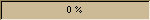

A simple progress bar. Useful when you are doing things that take a long
time. Try to always have an 'abort' button whenever it makes sence.
GTK.ProgressBar()->update(0.1)

GTK.ProgressBar()->set_show_text(1)->update(0.3)

GTK.ProgressBar()->update(0.6)

GTK.ProgressBar()->update(1.0)
 GTK.Progress()->set_value()
GTK.Progress()->set_value()